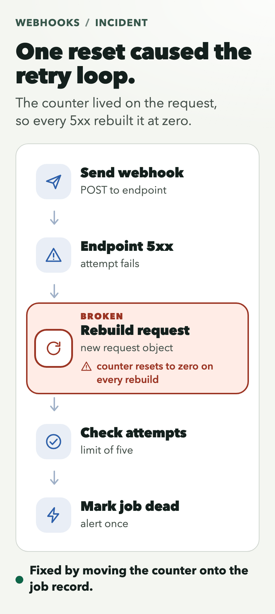

Root cause found. The retry counter lived on the request object, and the queue rebuilt it on every 5xx, so it went back to zero each time.
The counter now lives on the job record. The worker stops after five attempts and marks the job dead.
Verified: 40+ retries before, exactly 5 now.

A strict flow: the broken step is red, the cause is written under it.